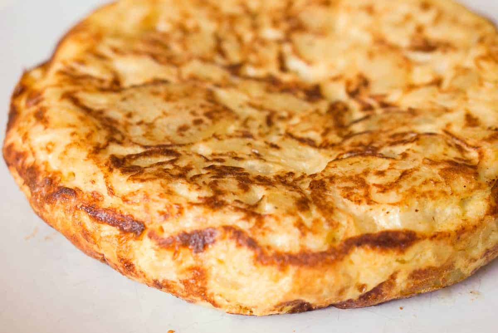

Spanish Omelette Recipe

Description
Ingredients
- 1 onion, thinly sliced
- 3 potatoes, thinly sliced
- 2 cups olive oil(500 mL)
- 6 eggs
- 1 pinch salt
Steps
- Heat up the olive oil in a really hot pan.
- Fry the vegetables in the olive oil over high heat for 10-15 minutes until they caramelize.
- Drain the vegetables and save the olive oil for later use.
- Add 6 eggs to a bowl and whisk. Add the fried vegetables, stir, and leave to set for 15-20 minutes.
- In a nonstick pan, fry the egg mixture over high heat for 1 minute, then reduce to a low heat for 2-4
minutes.
- Cover the pan with a large plate and carefully turn the omelet out onto the plate.
- Slide the omelet back into the pan and fry for a further 3-5 minutes over low heat. To check the omelet is
cooked, gently press on the centre of the omelet. If the surface springs back, it is ready.
- Repeat step 8 to remove omelet from the pan.
- Enjoy!